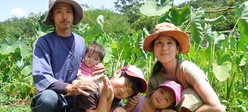
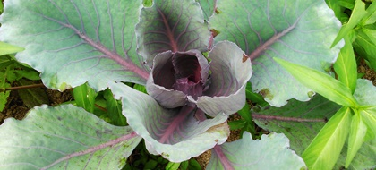

※「固定種」とは・・・何世代にもわたり種を繰り返し取り続けたものです。【詳しくはこちら】
今年に限り、農薬・化学肥料不使用で栽培する畑があります。
今年に限り、玉ねぎだけは固定種ではありません。

２０１３年の春、私たち家族は山梨県北杜市へ引っ越ししてきました。美味しい野菜を作りたい、自然との関わりを大切にしたい大切にしたいという気持ちから、農業を、そして自然栽培に取り組み始めました。

私たちが取り組む「自然栽培」は、簡単にいうと、の農薬や肥料肥料科などの外部のものに頼らず、その畑にある自然のサイクルを利用して作物を育てる農法です。